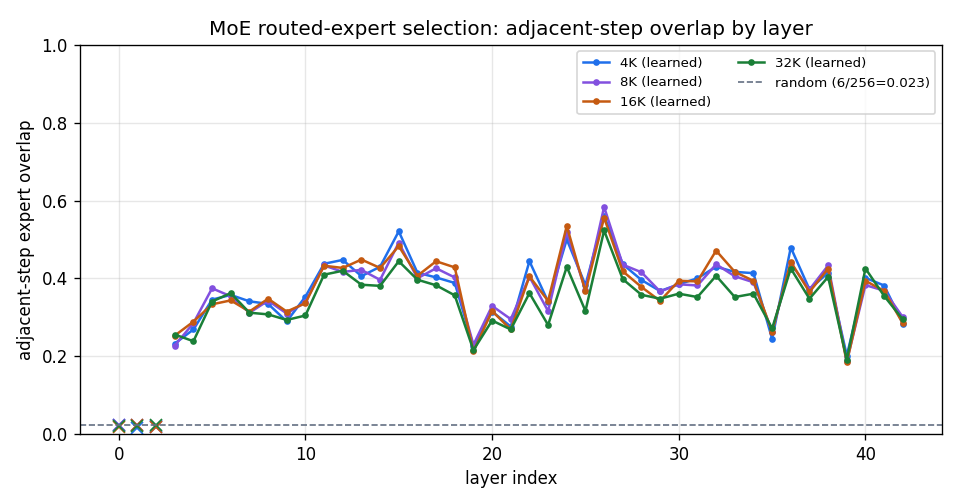
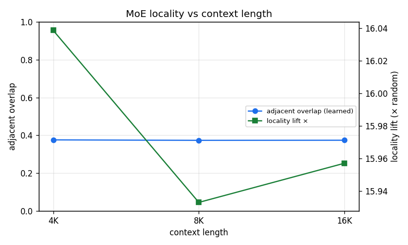
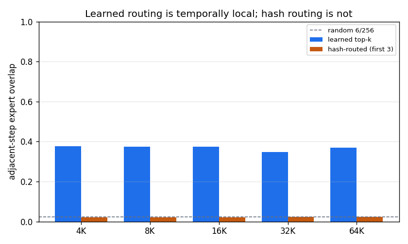
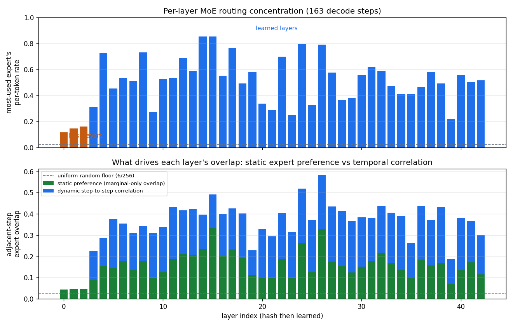
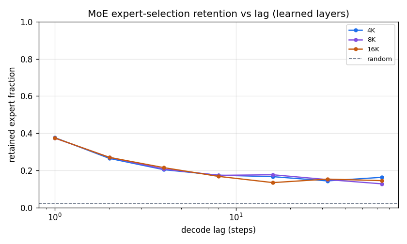
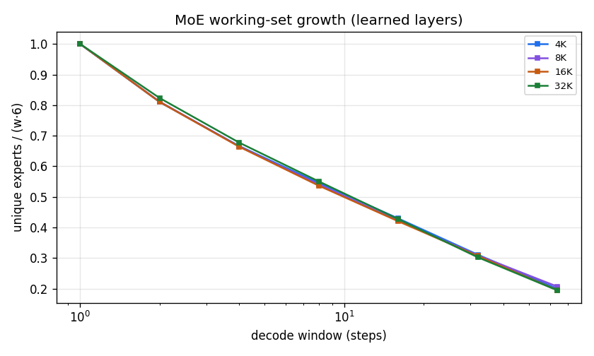

DeepSeek-V4 Sparse Attention — Part IV
The other sparse selection in DeepSeek-V4: which experts each token routes to in the Mixture-of-Experts FFN — and how temporally local that routing is. Measured from the same ds4 CPU decode path as Part III.
§Overview in one minute
DeepSeek-V4 is sparse in two ways per layer. The attention picks a small set of past KV entries (Parts I–III). The feed-forward block is a Mixture-of-Experts: it routes each token to just 6 of 256 experts. This report asks the same locality question of that routing: do consecutive tokens reuse the same experts? If they do, an expert-caching memory system can keep the hot ones close.
§1What MoE expert routing is
A Mixture-of-Experts FFN replaces one big feed-forward network with many small "experts" and a router that picks a few per token.
- 256 routed experts, 6 active. For each token, at each layer, a router scores all 256 experts and the top 6 run; their outputs are combined by the router weights. A shared expert (+1) always runs.
- How the 6 are chosen (learned layers). The router computes an affinity per expert —
sqrt(softplus(logit))— adds a learned selection bias, and keeps the top-6. This is the routing we expect to reflect token content. - The first 3 layers are different: hash routing. DeepSeek-V4-Flash routes the earliest layers by a fixed token-id → experts hash table (no learned scoring). We flag these separately throughout, because their "locality" is purely a function of whether the same token id repeats — not of learned behavior.
l selects for token t. Random choice of 6 from 256 gives an expected adjacent overlap of 6/256 = 0.0234 — the yardstick for everything below.§2How we measured it
- Same run, second trace. We instrumented the
ds4CPU decode path so that, right after the router selects its 6 experts, it logs(layer, decode step, token, the 6 expert ids, their weights)— one record per (layer, token), decode phase only. This runs alongside the KV-indexer trace of Part III, from the same forward pass. - Coverage. MoE routing happens in every layer's FFN (43 layers) — denser than the CSA indexer's 21 layers. Of those, 3 are hash-routed and 40 are learned-routed.
- Workload. RULER
niah_single_2at 4K, 8K, 16K; greedy decode; DeepSeek-V4-Flash at IQ2. 117–163 decode steps per run × 43 layers × 6 experts. - Analysis. The same id-set locality metrics used for KV selection, applied to the 6-expert sets, with hash and learned layers reported separately.
§3The metrics, in plain words
Adjacent-step overlap
Of the 6 experts chosen now, what fraction were also chosen one step ago. 0.37 means ~2.2 of the 6 carried over.
Locality lift
Adjacent overlap divided by the random baseline (6/256 = 0.0234). Lift 16 means the routing is 16× more self-similar than choosing 6 experts at random.
Retention at lag k
Overlap of the current expert set with the one k steps earlier — how long a chosen expert tends to stay chosen.
Working-set ratio
Distinct experts touched over w steps, divided by w×6. Small = a compact set of experts recurs; large = routing spreads across the pool.
§4Learned routing is strongly temporally local
Across the 40 learned-routing layers, consecutive tokens reuse about 37% of their 6 experts — 16× the random baseline. That is far from independent per-token routing:
| Context | adjacent overlap | experts carried / 6 | jaccard | churn | locality lift |
|---|---|---|---|---|---|
| 4K | 0.376 | 2.26 | 0.257 | 0.624 | 16.0× |
| 8K | 0.373 | 2.24 | 0.256 | 0.627 | 15.9× |
| 16K | 0.374 | 2.24 | 0.256 | 0.626 | 16.0× |
Learned layers only (hash layers excluded). "Experts carried / 6" = adjacent overlap × 6.

§5It is context-independent — unlike KV selection
The single most striking contrast with the attention side.
KV-selection locality changes with context: as the candidate pool grows, the lift rises (Part III: 1.7×→5.7× over 4K→16K). MoE routing does not — its pool is fixed at 256 experts regardless of context, so the routing-locality regime is the same at every length. The adjacent overlap is 0.376 / 0.373 / 0.374 at 4K / 8K / 16K — identical within 0.002.

§6Hash-routed layers are not temporally local
The first 3 layers route by a fixed token-id → experts table. Because consecutive generated tokens are usually different ids, their hashed expert sets barely overlap — adjacent overlap ≈ 0.02, essentially the random baseline (lift ≈ 1):
| Routing (at 16K) | layers | adjacent overlap | locality lift |
|---|---|---|---|
| learned top-6 | 40 | 0.374 | 16.0× |
| hash-routed | 3 | 0.021 | 0.9× |
| random baseline | — | 0.023 | 1.0× |

§7Per-layer routing structure — is the overlap really "temporal"?
Adjacent overlap conflates two things. A layer can look temporally local simply because it has favorite experts — a concentrated usage distribution — even if consecutive tokens were independent. Looking at each layer's decisions over the whole sequence separates them.
Every learned layer has a preferred committee; hash layers don't
Over a decode, each of the 40 learned layers routes with a clear favored set: its single most-used expert fires for 22%–85% of tokens (uniform would be 2.3%), just 7–32 experts cover 50% of the layer's routing, and normalized entropy is 0.63–0.85 (below the uniform 1.0). The 3 hash layers are near-uniform (top-expert rate 0.12–0.16, ~50 experts for 50%, entropy 0.92) — the control. Yet every learned layer still touches ~half the 256-pool (88–171 distinct experts), so the shape is a concentrated core plus a long exploring tail, never a fixed 6. The peakiest layers (L14, L15: one expert on the committee for 85% of tokens; 7 experts do half the work) cluster mid-stack; the flattest learned layer is L39 (0.22).
Static preference vs dynamic correlation
Split each layer's overlap into static preference — the overlap you'd get if consecutive tokens were independent draws from that layer's own usage distribution — and dynamic correlation — the excess on top. For the learned layers (consistent across 4K/8K/16K):
| component | adjacent overlap | × over uniform | what it is |
|---|---|---|---|
| uniform random | 0.023 | 1.0× | 6/256 chance floor |
| static preference | ~0.17 | ~7.4× | from favorite experts alone (independent tokens) |
| observed | 0.374 | 16.0× | static × ~2.3× dynamic step-to-step correlation |
So the ~16× "locality lift" factors as ≈7.4× static preference × ≈2.3× temporal correlation. Both are real: static concentration is the larger multiplier off random, but the step-to-step correlation adds at least as much overlap in absolute terms (observed − static ≈ 0.20 vs static − uniform ≈ 0.14).

Two modes, and a division of labor by depth
Across layers, corr(static, observed) = +0.86 and corr(dynamic-multiplier, concentration) = −0.86: the extra stickiness is strongest exactly where concentration is weakest. Learned layers span two mechanisms that both land near 0.37 — "specialist" layers (peaky: L14/15/24/26) get their overlap mostly from static preference (dynamic ≈ 1.5×), while "context-tracking" layers (broad: L9/20/21/23) have the highest dynamic multipliers (3.1–3.2×). By depth, concentration falls shallow→deep (top-expert rate 0.58 → 0.48) while the dynamic multiplier rises (2.18 → 2.49):
| depth third | layers | top-expert rate | observed overlap | dynamic × |
|---|---|---|---|---|
| shallow | 3–15 | 0.58 | 0.362 | 2.18× |
| middle | 16–28 | 0.53 | 0.394 | 2.42× |
| deep | 29–42 | 0.48 | 0.365 | 2.49× |
§8Retention & working set
A durable near-term core plus steady turnover: a couple of experts persist across many steps while most churn. Even 64 steps back, learned-layer retention (~0.15) is still 6× the random floor:
| retention at lag k → | 1 | 2 | 4 | 8 | 16 | 32 | 64 |
|---|---|---|---|---|---|---|---|
| 4K | 0.376 | 0.264 | 0.203 | 0.174 | 0.166 | 0.143 | 0.162 |
| 8K | 0.373 | 0.270 | 0.207 | 0.173 | 0.176 | 0.150 | 0.127 |
| 16K | 0.374 | 0.270 | 0.214 | 0.167 | 0.134 | 0.153 | 0.144 |

The working set spreads faster than for KV selection: over a 64-step window a learned layer touches ~75 distinct experts (ratio ≈ 0.195 of 64×6), and across the full decode ~120 of 256 (~47% of the pool). So the routing has a sticky core but explores broadly over time:
| working-set ratio, window w → | 1 | 2 | 4 | 8 | 16 | 32 | 64 |
|---|---|---|---|---|---|---|---|
| 4K | 1.000 | 0.810 | 0.666 | 0.546 | 0.429 | 0.311 | 0.200 |
| 16K | 1.000 | 0.810 | 0.664 | 0.537 | 0.420 | 0.307 | 0.195 |

§9Why hardware cares
In a disaggregated or offloaded MoE serving system, expert weights are large and may live in a slower/farther memory tier. The routing locality here says:
- ~2 of 6 experts are predictable from the previous token — a per-layer "hot expert" cache captures real reuse (16× over blind caching).
- The hit rate is context-independent, so a cache sized for one context length transfers to all — provisioning is simple.
- But the tail is heavy: ~47% of experts are touched across a decode, so a tiny cache saturates; capacity for the churning tail matters.
- Skip the first 3 layers for recency-based prefetch — their hash routing is not predictable from history (prefetch by token-id table instead).
§10Takeaways
- Per-layer structure: every learned layer keeps a preferred committee (7–32 experts do half its routing, one expert often used in the majority of tokens); the ~16× lift ≈ 7.4× static preference × 2.3× temporal correlation. Early layers = fixed specialists, deep layers = context trackers; hash layers are near-uniform.
- Learned MoE routing is strongly temporally local: ~0.374 adjacent overlap (~2.2 of 6 experts persist), 16× the 6/256 random baseline.
- It is context-independent (0.374 ± 0.002 across 4K/8K/16K) — the fixed 256-expert pool means prompt length does not change the regime. This contrasts sharply with KV-selection locality, which strengthens with context.
- The 3 hash-routed layers are not local (≈ random) — a property of deterministic token-id routing, reported separately.
- Retention has a durable core (still 6× random at lag 64) but the working set is broad (~47% of experts over a full decode).
- Collected from the same decode pass as the KV trace in Part III, so attention- and FFN-sparsity are aligned per (layer, step).
§11Honest limitations
- n = 1 per length, IQ2 quantization, CPU reference path — quantization can shift the router's top-6 versus full precision; no cross-sample confidence intervals.
- Context sweep is the wrong axis for MoE. Because the expert pool is fixed, 4K/8K/16K mostly vary token content, not the sparsity regime; a decode-length sweep would probe how long the hot-expert set stays warm (future work).
- Logical expert ids, not a physical cache — overlaps are an upper bound that ignores expert-load timing and bandwidth.
- Greedy decode on a single retrieval task (RULER needle); other tasks and samplers may route differently.